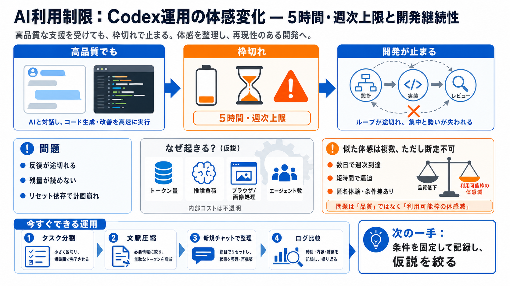

前提
体験談＋仮説で、公式検証は未確定

Redditでは、Codex（主に GPT-5.5）の利用制限が「以前より厳しくなり、開発が中断される」との不満が広がっています。
投稿者は「モデル品質は高い」一方で、利用上限に触れて作業セッションが中断されることが最大の問題だと述べています。
上限は単なる“回数表示”でなく、トークン消費や推論負荷、ブラウザ制御、エージェント運用などの内部コストで決まる可能性があります。
コメントでは「2〜3日で週次を燃やした」「1時間〜数メッセージで5時間上限に近づく」といった強い体感が複数出ています。
「リセットがあるからしのぐ」は現実的に危険だとされ、リセット仕様が待ちや運用の面倒さを増やす可能性も示唆されています。
制限の変化が「reset changes / codex update」などの更新時期と重なった可能性が話題になっています。
大規模なエージェント運用で、instructionsの追従が以前より不十分に見えるケースがあるという指摘があります。
内部コストが見えないため、推論負荷・トークン計算・ブラウザ/画像処理・マルチエージェント化・設定差など、複数の仮説が挙がっています。
一方で「悪化は確認できない」「品質は相変わらず信頼できる」「小規模プロジェクトや新しいチャット運用で抑えられる」との声もあります。
対策として、タスクを小さく分割して文脈を絞る、必要に応じて新規チャットで整理する、背景処理を抑える、マルチエージェントを増やしすぎない工夫が挙がっています。
「opaque（不透明）」と感じる声があり、内部で何がコストを押し上げているか分からないことが不安を強めています。サービス側には、制限変更の告知や調査の仕組みが求められます。
入力データから言えるのは「Codexの品質が下がった」というより、能力を発揮する“利用可能枠”が体感上減り、開発の継続性と計画性が損なわれていることです。
No references found